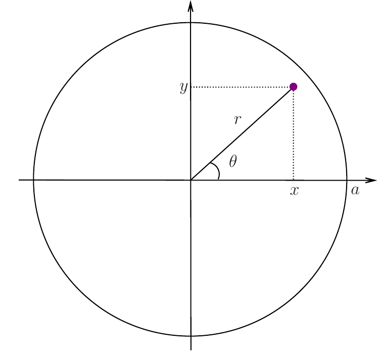
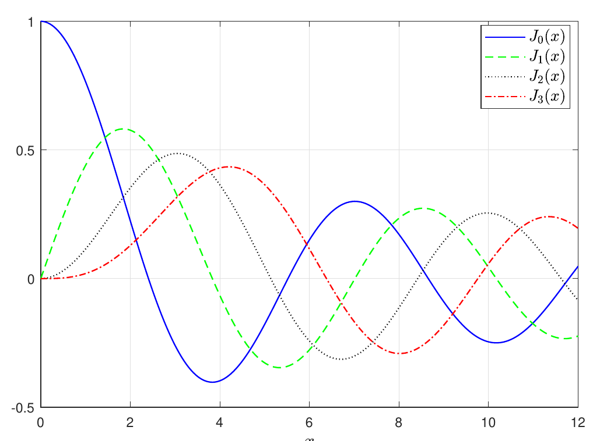

9 Waves on circular domain
You find content related to this lecture in the textbooks:
- Baldock and Bridgeman (1983) section 7.5
- Coulson and Jeffrey (1977) sections 7 (eqs.(31) - (35)) and section 35
The following video has some mistakes in it. These are corrected in these notes.
Let’s find normal mode solution for a circular membrane of radius \(a\) with fixed boundary (see Figure 9.1). Mathematically, we need to solve the wave equation (Eq. 8.1) in the disc of radius \(a\), i.e. in region \(D=\{(x,y)\in\mathbb{R}^2\vert r^2=x^2+y^2 < a^2 \}\). It is convenient to use polar coordinates \((r,\theta)\), defined as (see Figure 9.1) \[ x=r\cos\theta, \quad y=r\sin\theta. \tag{9.1}\]

Let \[ Z(r, \theta, t) = z\left(x(r,\theta), y(r, \theta),t\right), \tag{9.2}\] i.e., \(Z(r, \theta, t)\) is a solution of the wave equation in \(D\), expressed in terms of polar coordinates.
We know that the wave equation can be written in vector notation using the Laplace operator \(\nabla^2\) as \[ \partial_t^2 z - c^2 \nabla^2 z =0. \tag{9.3}\] It is well-known (see, e.g., Theorem 3.43 in the Spring 2020 Calculus notes or Theorem 4.6 in the Spring 2021 Calculus notes) that the Laplacian in polar coordinates is given by \[ \nabla^2 = \partial_r^2 + \frac{1}{r}\, \partial_r + \frac{1}{r^2} \, \partial_{\theta}^2. \tag{9.4}\] Therefore, the 2D wave equation in polar coordinates has the form \[ \partial_t^2 Z - c^2 \left(\partial_r^2 Z + \frac{1}{r}\, \partial_r Z + \frac{1}{r^2} \, \partial_{\theta}^2 Z\right)= 0. \tag{9.5}\] Our aim is to solve it subject to the boundary condition Eq. 9.20. As in the preceding section, we employ the method of separation of variables, i.e. we assume that \[ Z(r, \theta, t)=R(r)\Theta(\theta)T(t). \tag{9.6}\] Substituting this into Eq. 9.5, we find that \[ R\Theta T''=c^2\left(R''\Theta T + \frac{1}{r} \, R'\Theta T + \frac{1}{r^2} \, R\Theta'' T\right) \tag{9.7}\] Dividing by \(R\Theta T\) gives \[ \frac{T''(t)}{T(t)} = c^2\left(\frac{R''(r)}{R(r)} + \frac{R'(r)}{r R(r)}+\frac{\Theta''(\theta)}{r^2\Theta(\theta)}\right). \tag{9.8}\] Employing the same arguments as in the preceding section, we conclude that \[ \frac{T''(t)}{T(t)} = c^2\left(\frac{R''(r)}{R(r)} + \frac{R'(r)}{r R(r)}+ \frac{\Theta''(\theta)}{r^2\Theta(\theta)}\right) = -k^2 c^2 \tag{9.9}\] for some constant \(k\). This means that we have the ODE \[ T''(t)=-k^2 c^2 \, T(t) \tag{9.10}\] and the equation \[ \frac{R''(r)}{R(r)} + \frac{R'(r)}{r R(r)}+ \frac{\Theta''(\theta)}{r^2\Theta(\theta)} = -k^2 \tag{9.11}\] The general solution of Eq. 8.3 is (cf. Eq. 8.11) \[ T(t)=F \, \sin(k c t)+G \, \cos(k c t) \tag{9.12}\] where \(F\) and \(G\) are arbitrary constants.
Rewriting Eq. 9.12 as \[ \frac{r^2R''(r)+rR'(r)}{R(r)} + k^2 r^2 = -\frac{\Theta''(\theta)}{\Theta(\theta)}, \tag{9.13}\] we conclude that for this equation to hold for all \(r\) and \(\theta\), both sides must be equal to a constant, which we choose to be \(n^2\) (for some constant \(n\)), i.e. \[ r^2\left(\frac{R''(r)}{R(r)} + \frac{R'(r)}{r R(r)} \right)+ k^2 r^2 = n^2, \quad -\frac{\Theta''(\theta)}{\Theta(\theta)}= n^2 \tag{9.14}\] (the constant, \(n^2\), cannot be negative because, with a negative constant, it will be impossible to obtain a solution). Thus, we we have obtained the following two ODEs: \[ R''(r) + \frac{1}{r} \, R'(r) +\left(k^2 -\frac{\lambda^2}{r^2}\right) R(r) = 0 \tag{9.15}\] and \[ \Theta''(\theta)=-n^2 \Theta(\theta) . \tag{9.16}\]
The general solution of Eq. 9.16 is \[ \Theta(\theta) = A\sin(n \theta)+B\cos(n \theta) \tag{9.17}\] for arbitrary constants \(A\) and \(B\). We impose the condition \[ \Theta(\theta+2\pi) = \Theta(\theta) \quad \text{for all} \ \ \theta. \] This is a natural condition because \((r,\theta)\) and \((r,\theta+2\pi)\) represent a single point in domain \(D\). Thus we require \(n\in\mathbb{Z}\). In fact we only need to consider \(n\in\mathbb{N}\cup\{ 0\}\) because of the symmetry of \(\sin\) and \(\cos\).
Eq. 9.15 has the form \[ r^2\,R''(r) + r \, R'(r) +\left(r^2\,k^2 -n^2\right) R(r) = 0. \tag{9.18}\] It is a well-known equation, called the Bessel differential equation. Its solutions are not elementary functions. We are only interested in solutions that are finite at \(r=0\). There is a whole family of such solutions, \[ R(r) =J_n(kr), \tag{9.19}\] where \(J_n\) is the \(n\)th Bessel functions of the first type. We have already determined above that we are only interested in the cases where \(n\in\mathbb{N}\cup\{0\}\).
Next we need to impose the zero Dirichlet boundary condition (the edge of the membrane is fixed) \[ Z(a, \theta, t) = 0. \tag{9.20}\] To do this, we only need to know that each Bessel function has an infinite number of zeros. A plot of the first few Bessel functions of the 1st kind is shown in Figure 9.2.

We denote the \(m\)th zero of the \(n\)th Bessel function of the 1st kind by \(k_{nm}\). We have \[\begin{split} R(a)=0 \quad &\Rightarrow \quad J_n(k\,a)=0\\ &\Rightarrow \quad k\,a=k_{nm}\\ &\Rightarrow \quad k=\frac{k_{nm}}{a} \end{split}\] for \(m\in\mathbb{N}\).
Finally, combining the above with Eq. 9.12 and Eq. 9.17, we obtain the following solutions (that satisfy the required boundary condition): \[\begin{split} Z_{nm}(r,\theta,t)=&J_m\left(k_{nm} \frac{r}{a}\right)\\ \cdot&\Big[ \sin(n\theta) \left(F_{nm} \, \sin(k_{nm} c t) + G_{nm} \, \cos(k_{nm} c t)\right)\\ &+\cos(n\theta) \left(\tilde{F}_{nm} \, \sin(k_{nm} c t) + \tilde{G}_{nm} \, \cos(k_{nm} c t)\right)\Big] \end{split} \tag{9.21}\] where \(n\in\mathbb{N}\cup\{0\}\), \(m\in\mathbb{N}\) and \(F_{nm}\), \(G_{nm}\), \(\tilde{F}_{nm}\) and \(\tilde{G}_{nm}\) are arbitrary real constants. Solutions in the form Eq. 9.21 are the normal modes of vibrations of the circular membrane. Once normal modes are known, we can find a solution satisfying some initial conditions by using a linear combination of the normal modes \[ Z(r,\theta,t)=\sum_{n=0}^{\infty}\sum_{m=1}^{\infty}Z_{nm}(r,\theta,t). \tag{9.22}\] Note that constants \(F_{nm}\), \(G_{nm}\), \(\tilde{F}_{nm}\) and \(\tilde{G}_{nm}\) (in the formula for \(Z_{nm}\) for each \(n,m\)) are still arbitrary. To determine them, we need to substitute Eq. 9.22 into initial conditions. This will lead to the so-called Fourier-Bessel series. This is based on the identities \[ \int_0^aJ_n\left(k_{nm}\frac{r}{a}\right)J_n\left(k_{nl}\frac{r}{a}\right)r\,dr =\delta_{ml}\frac{a^2}{2}\left(J_{n+1}(k_{nm})\right)^2. \tag{9.23}\]